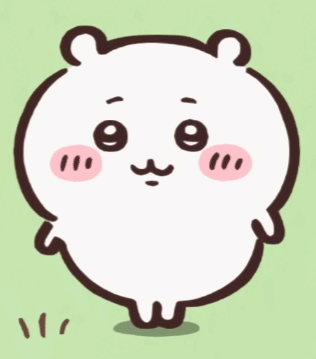
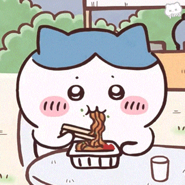
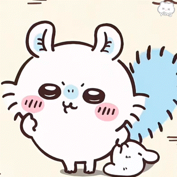
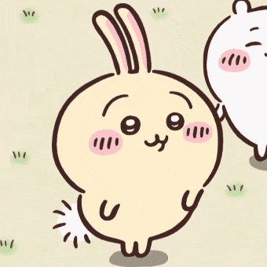

Chiikawa Theme
Hachiware Theme
Momonga Theme
Usagi Theme
Chiikawa Show Summary




Chiikawa (ちいかわ) is a Japanese manga series by Nagano. It has been serialized online via Twitter since January 2020 and its being collected into volumes by Kodansha. An anime television series adaptation directed by Takenori Mihara at Doga Kobo premiered on April 2022. The episodes are released on Fuji TV's Mezamashi TV morning news program and Youtube.
Plot:
The story follows the sometimes happy, sometimes sad, and a tad stressful daily life of "some sort of small, cute creature" known as Chiikawa. Chiikawa enjoys delicious food with bees and rabbits, toils hard every day for the rewards of work, and still maintains a smile.
Characters:
Chiikawa (ちいかわ)
A little critter who lives in a big house. Very small, cute and easily moved to tears, shy and scared of every monster they meet. However, they always try to be stronger, and be a good friend who helps their friends when they're in trouble. In the series, Chiikawa is shown to be emotionally sensitive, timid, and physically weak. Because of this, they are often times the scaredy-cat of the trio, being easily frightened and prone to crying.
They are also shown to be shy in social situations, usually relying on Hachiware to talk for the both of them. Much like Hachiware, Chiikawa is shown to have artistic passions, specifically dancing and singing. However, their stage fright and timid nature prevents them from singing confidently in front of an audience, even if it is familiar people.
Despite being meek and physically lacking, Chiikawa has exhibited selfless behaviour in dangerous situations, specifically when Hachiware and Usagi are involved. Chiikawa is often the first to throw themselves in the face of danger in attempt to protect their friends, though since they are the weakest in the trio, it is usually Hachiware or Usagi who ends up saving them. Chiikawa is even shown to feel guilt at their own incompetence. However, Chiikawa's remarkable perserverance means they often are willing to try things again even after failure, such as the Weed Pulling License exam.
Hachiware (ハチワレ)
Hachiware looks like a cat but is not one. Hachiware is noted to be the most erudite and curious of the three. They have an interest in reading books and a rather competent vocabulary for a child their age. They are also the most extroverted of the trio, often speaking on both theirs and Chiikawa's behalf, and easily striking up conversation and making friends with fellow animals and Yoroi-san.
They are also notably the most mature of the three. In the Pajama Party arc, they take responsibility for their mistakes on stage, and resolves to work harder. They also try their best to comfort Chiikawa when the latter is upset. With their intelligence, Hachiware is also capable of creating solutions for problems they encounter, but has a tendency to hesitate or overthink their decisions.
Hachiware has shown interest in artistic pursuits. They spent a portion of time saving up money to buy a camera to pursue their photography hobby, and they also own a guitar and is sometimes shown playing and singing along with it.
Usagi (うさぎ)
Usagi (lit. rabbit) looks like a rabbit but is not one. Their language is the same as Chiikawa's, and they tend to shout rather than speak quietly. Usagi has a mischievous, hyper, and chaotic personality. They often do what they like without much regard for social etiquette, as seen in earlier episodes where they dirty themselves by playing on a gigantic piece of pudding, and proceeded to ravenously eat a pancake with little-to-no regard for table manners.
Usagi is also shown to be the most decisive, and occasionally the most fearless and competent of the main trio. When rescuing the three members of Pajama Party, Usagi is the first one to notice their predicament, and to run to save them
Momonga (モモンガ)
A flying squirrel who is often seen begging for attention and praises, stealing food, and causing troubles for other characters. It's name comes from the Japanese word "momonga", which means flying squirrel. Momonga is a hyperactive and slightly mean flying squirrel.
It is always acting cute and begging for all sorts of things. Personality wise, she appears self-centered and always wants to get what she wants. Even during dangerous situations, it would ask for food and rest. Momonga also has the tendency to imitate other cute characters, notably Chiikawa. It often imitates Chiikawa's yawning and crying.